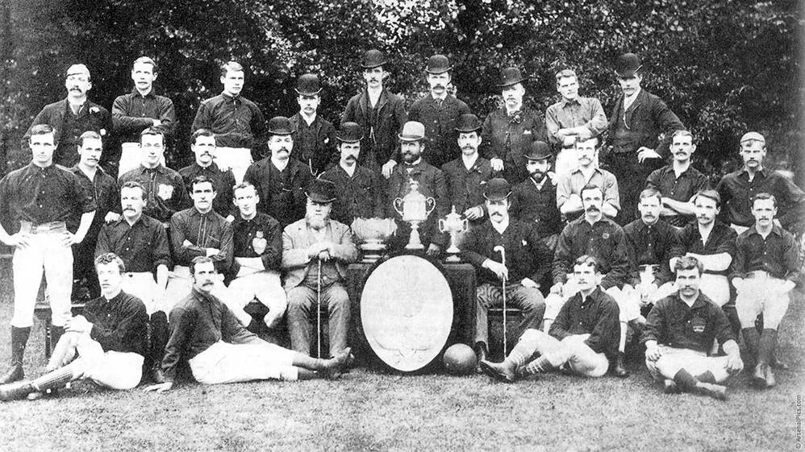
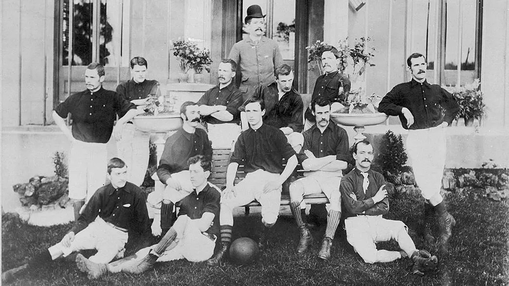
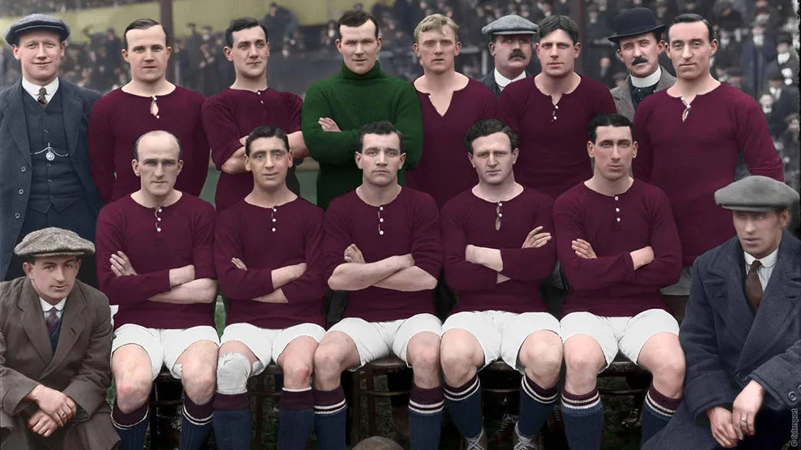
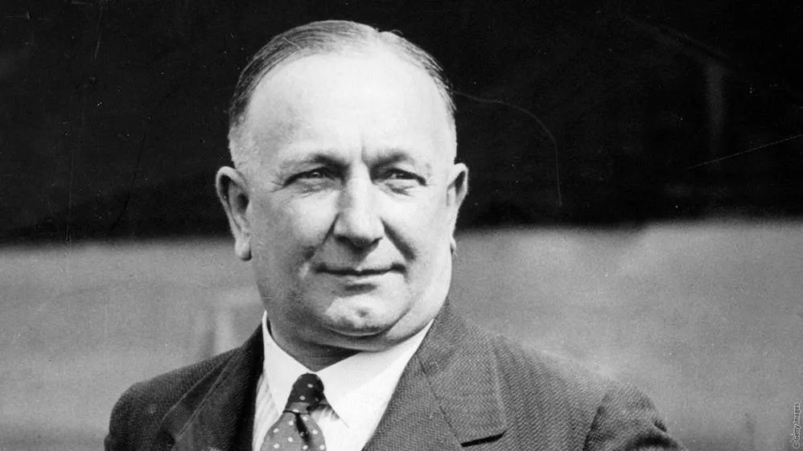
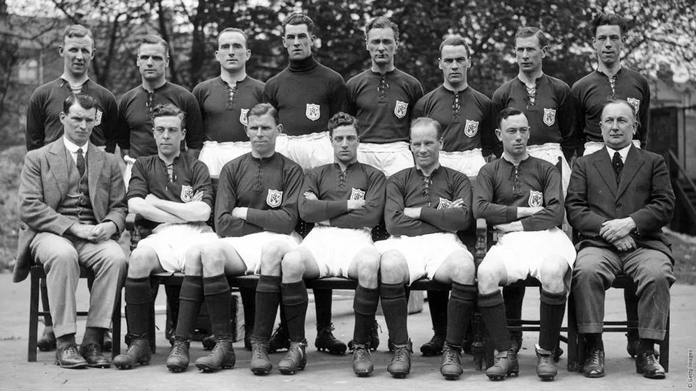
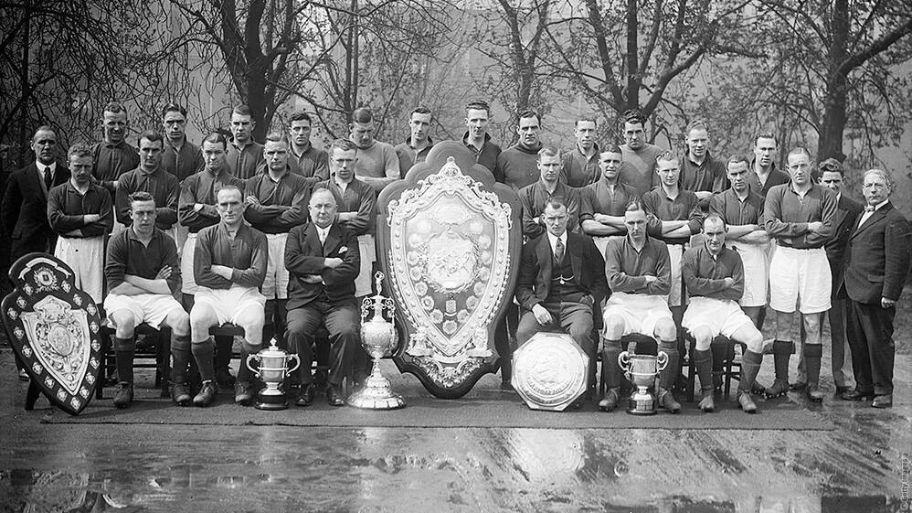
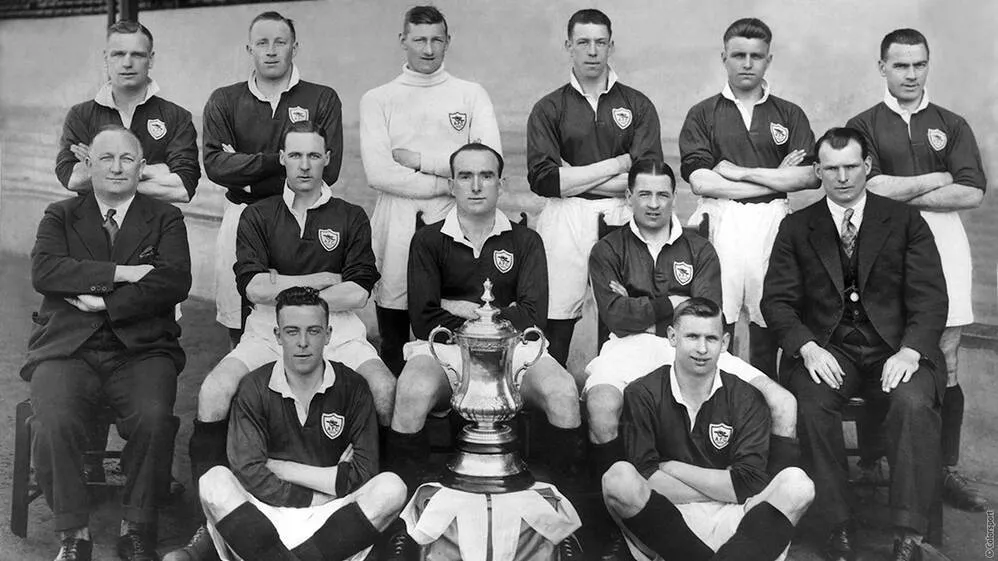
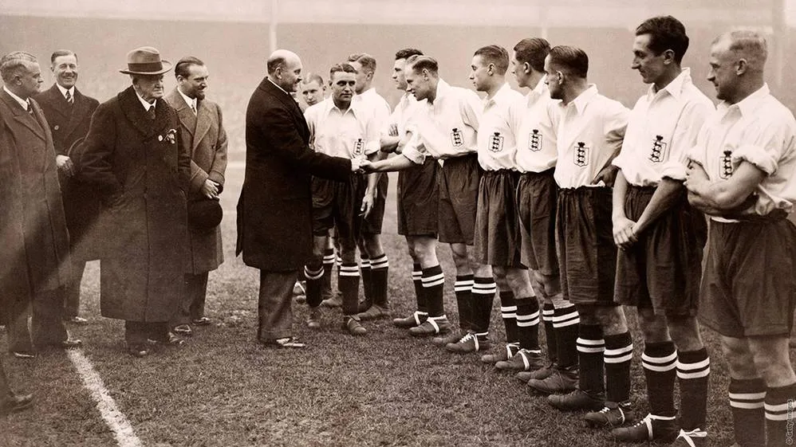
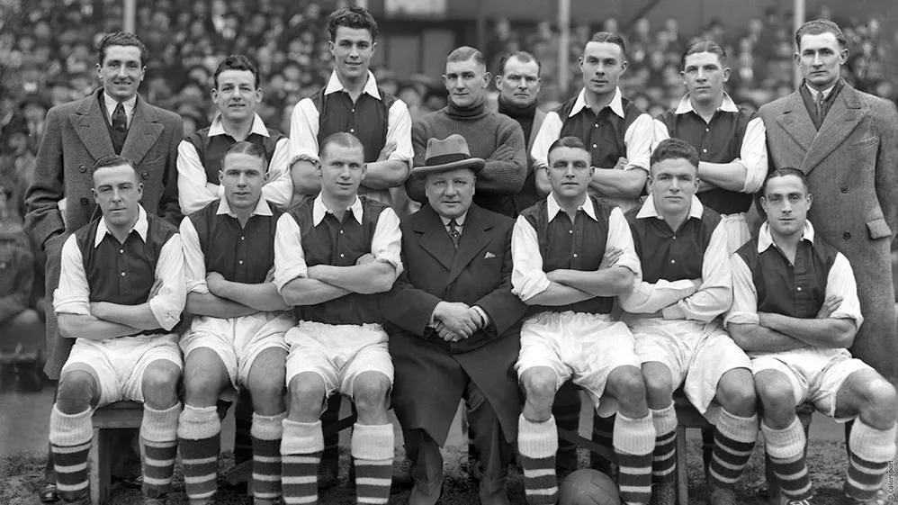
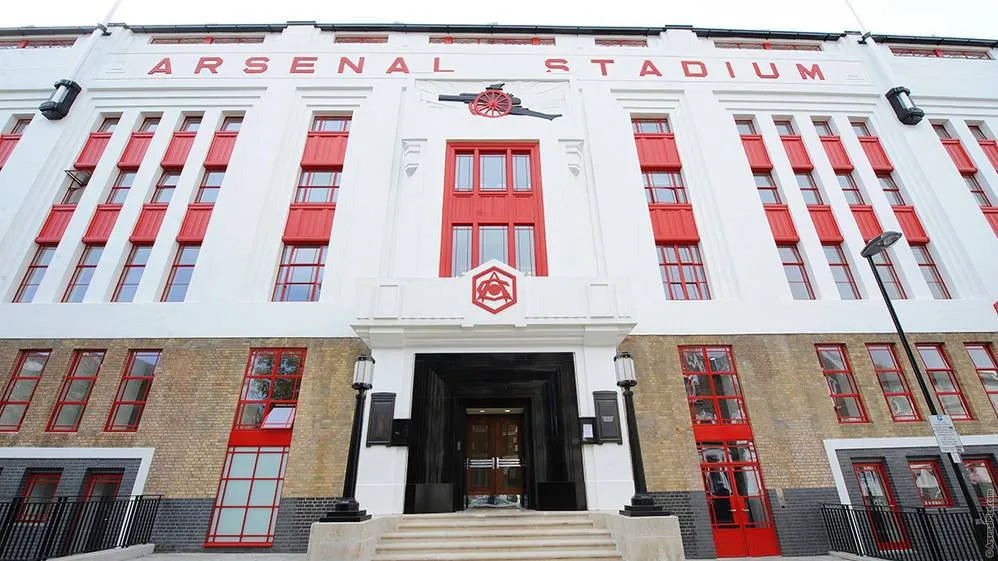

Nestra Historia

Nuestros Fundadores
A finales de 1886, un grupo de trabajadores de la fábrica de armamento del Arsenal de Woolwich decidió formar un equipo de fútbol. Se llamaron a sí mismos Dial Square en referencia al reloj de sol que se encontraba encima de la entrada de la fábrica.

Un pequeño grupo de escoceses sembró la semilla que se convertiría en uno de los nombres más famosos del fútbol

En 1895, dos años antes de que el club se convirtiera en profesional, Fred Beardsley, Bill Parr y Charlie Bates, se unieron al equipo y trajeron consigo su antiguo uniforme rojo

HERBERT CHAPMAN - EL GRAN INNOVADOR
Herbert Chapman, que había ganado la Copa FA y dos títulos de la Primera División con el Huddersfield Town a principios de los años veinte, aceptó unirse a los Gunners en el verano de 1925.

HERBERT CHAPMAN ES NOMBRADO DT

EL ARSENAL GANA SU PRIMER TÍTULO DE LIGA

EL ARSENAL GANA SU PRIMER GRAN TROFEO

SIETE GUNNERS SELECCIONADOS PARA INGLATERRA

EL ARSENAL CONSIGUE UN HAT-TRICK DE TÍTULOS
